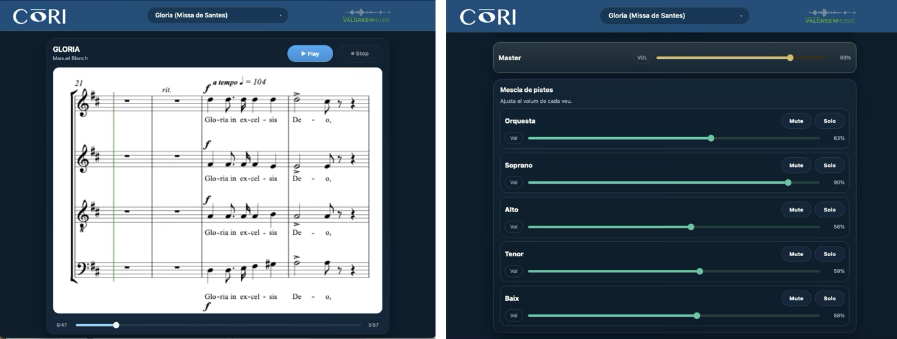

Partitura sincronitzada · Àudio per veus · Mixer personalitzat
La partitura en vídeo avança automàticament amb la música. Cada cantant veu exactament on és en cada moment.
Cada veu té el seu propi canal d'àudio. Puja la soprano, baixa el tenor, activa el Solo. Tot en temps real.
Funciona perfectament a Windows, Mac, iPhone i Android. En horitzontal, el vídeo omple la pantalla per màxima comoditat.
Accés directe des del navegador. Sense app, sense subscripció individual. Un enllaç web i ja pots assajar.
Totes les obres del cor en un sol lloc. Un repertori personalitzat per a cada entitat, amb cançons pròpies o clàssiques.
Veus generades amb síntesi vocal i orquestra amb sons d'alta qualitat.
En format MXL, Finale, Sibelius o PDF. Nosaltres ens encarreguem de tot el procés de producció.
Generem el vídeo de partitura, síntesi vocal per veu i part instrumental d'àudio amb qualitat professional.
Cada projecte és personalitzat, tindràs un enllaç web distintiu, amb el que el teu cor ja pot assajar.
Cada cantant entra al seu enllaç, tria la veu, regula el volum i assaja quan i on vol.
T'expliquem com podem digitalitzar el teu repertori i posar-te en marxa en qüestió de dies.
✉ info@coriplayer.com